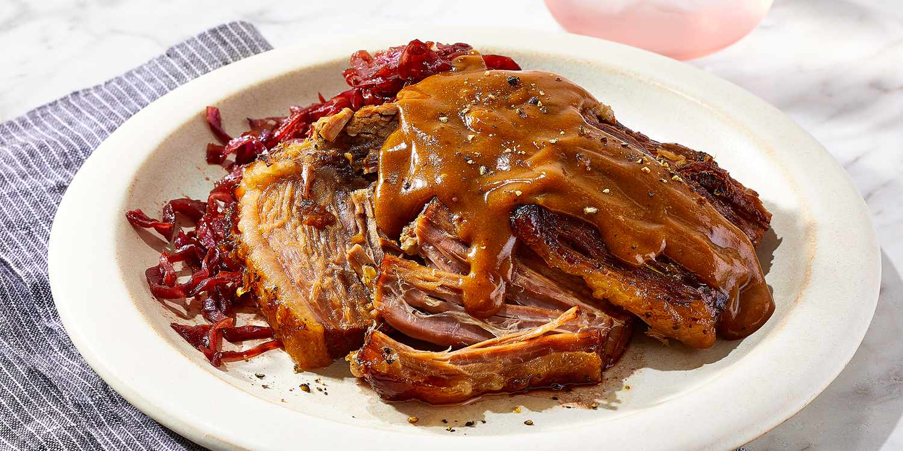

Gastronomía de Alemania

Sauerbraten
Un asado alemán que generalmente se prepara con carne de res marinada durante varios días.
Bratwurst
Salchichas alemanas que se asan a la parrilla y se sirven con diferentes tipos de mostaza.

Pretzel
Un tipo de pan horneado, retorcido en forma de lazo, a menudo cubierto con sal.
Kartoffelsalat
Ensalada de papas alemana que se sirve fría o caliente, generalmente con vinagre y aceite, o mayonesa.

Schnitzel
Un filete empanizado y frito, generalmente de cerdo o ternera, similar a la milanesa.